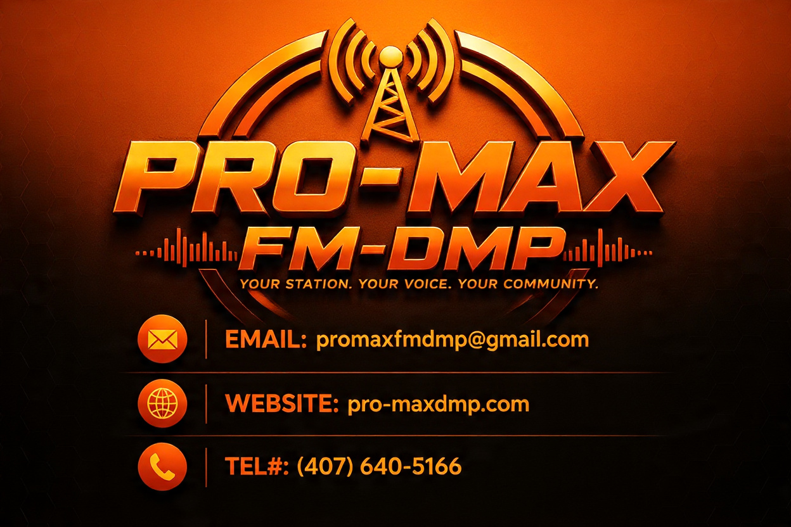

Live Radio
Koute pwogramasyon PRO-MAX FM an dirèk sou entènèt.
Koute kounye a →
Yon platfòm dijital pwofesyonèl ki mete radyo an dirèk, emisyon, podcast, mizik, nouvèl, espò, evènman, akademi, pwomosyon ak jesyon medya ansanm nan yon sèl sistèm.
Antre dirèkteman nan chak seksyon prensipal platfòm dijital la.
Koute pwogramasyon PRO-MAX FM an dirèk sou entènèt.
Koute kounye a →Dekouvri emisyon, animatè, orè ak pwogram espesyal yo.
Gade emisyon yo →Tande entèvyou, deba, analiz ak seri odyo espesyal.
Ale nan podcast →Eksplore mizik, atis, DJ ak nouvo pwodiksyon yo.
Dekouvri mizik →Rete enfòme sou nouvèl kominotè, lokal ak entènasyonal.
Li nouvèl yo →Jwenn nouvèl espò, analiz, rezilta ak emisyon espesyal.
Antre nan espò →Swiv aktivite, entèvyou, prezantasyon ak evènman ofisyèl.
Gade evènman yo →Dekouvri atis, mizisyen, DJ, animatè ak kreyatè yo.
Dekouvri atis yo →PRO-MAX FM/DMP se yon sistèm dijital konplè pou jere radyo, mizik, podcast, nouvèl, medya, itilizatè, evènman, piblisite, sekirite, rapò ak operasyon administratif.
Koute PRO-MAX FM, suiv emisyon yo, dekouvri podcast yo, konekte ak atis yo epi itilize zouti jesyon dijital platfòm nan.